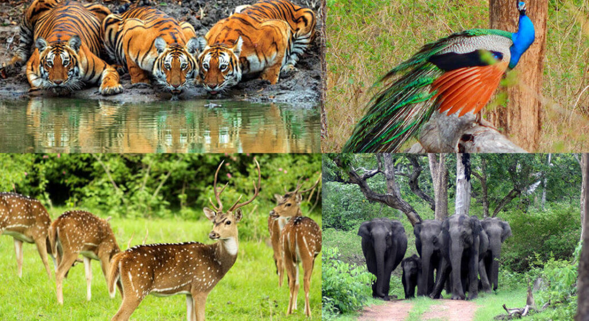

Bandipur National Park is a national park covering 868.63 km2 (335.38 sq mi) in Chamarajnagar district in the Indian state of Karnataka. It was established as a tiger reserve under Project Tiger in 1973.It is part of the Nilgiri Biosphere Reserve since 1986.
The Maharaja of the Kingdom of Mysore created a sanctuary of 90 km2 (35 sq mi) in 1931 and named it the Venugopala Wildlife Park. The Bandipur Tiger Reserve was established under Project Tiger in 1973 by adding nearly 800 km2 (310 sq mi) to the Venugopala Wildlife park.
Bandipur National Park is located between 75° 12’ 17" E to 76° 51’ 32" E and 11° 35’ 34" N to 11° 57’ 02" N where the Deccan Plateau meets the Western Ghats, and the altitude of the park ranges from 680 meters (2,230 ft) to 1,454 meters (4,770 ft). As a result, the park has a variety of biomes including dry deciduous forests, moist deciduous forests and shrublands.
The wide range of habitats help support a diverse range of organisms. The park is flanked by the Kabini river in the north and the Moyar river in the south. The Nugu river runs through the park. The highest point in the park is on a hill called Himavad Gopalaswamy Betta, where there is a Hindu temple at the summit. Bandipur has typical tropical climate with distinct wet and dry seasons. The dry and hot period usually begins in early March and can last till the arrival of the monsoon rains in June.
